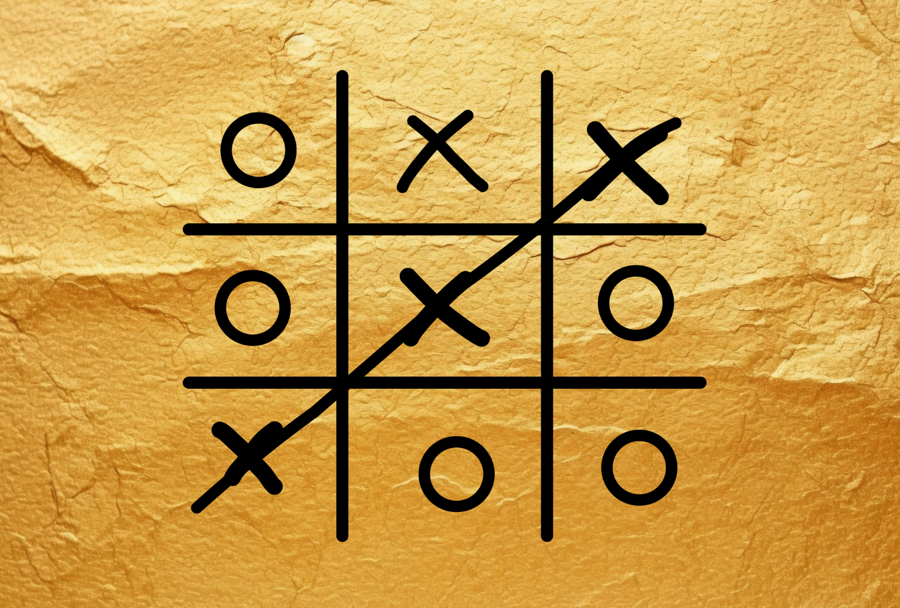
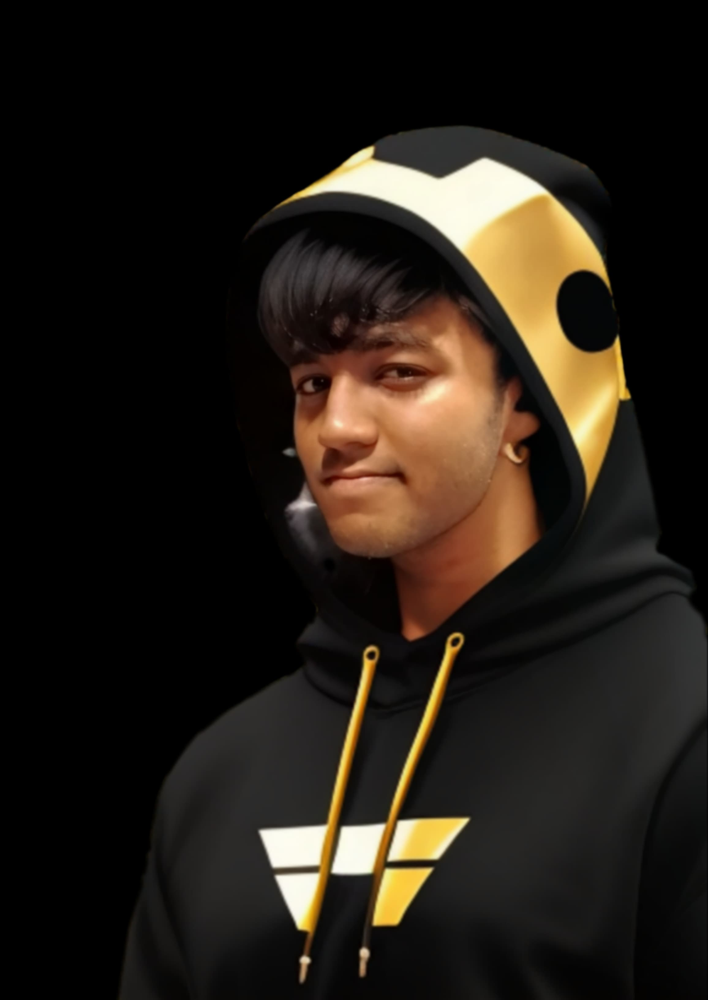

Heyyooo! I'm Rakkesh, an undergraduate in computer science at Sathyabama Institute of Science and Technology, Chennai. This journey into creating an online Tic Tac Toe game has been super exciting! What started as a fun idea quickly turned into a project that tested my skills in game logic, real-time updates, and front-end design.
My goal was to make a game that was easy to play yet engaging, allowing players to connect and compete from anywhere. Building the core game logic for moves and win detection was straightforward, but adding multiplayer functionality with real-time updates made it much more interesting. Handling user sessions and keeping track of player stats added a meaningful layer to the project as well.
The most rewarding part was designing a responsive, user-friendly interface that makes gameplay seamless on any device. I’ve learned so much along the way, from debugging challenges to enhancing user experience, and I’m thrilled to see this project come to life and connect people through a classic game!
Here's My Journey!

